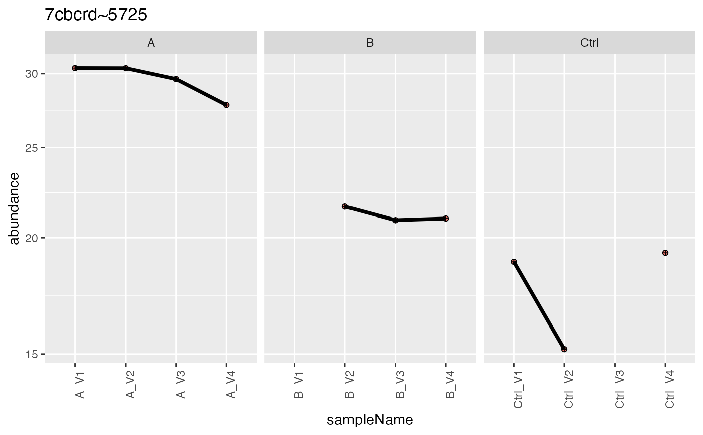

Summarizes the intensities within hierarchy
Source:R/tidyMS_aggregation.R
intensity_summary_by_hkeys.RdSummarizes the intensities within hierarchy
See also
Other aggregation:
INTERNAL_FUNCTIONS_BY_FAMILY,
aggregate_intensity_topN(),
estimate_intensity(),
medpolish_estimate(),
medpolish_estimate_df(),
medpolish_estimate_dfconfig(),
medpolish_protein_estimates(),
plot_estimate(),
plot_hierarchies_add_quantline(),
plot_hierarchies_line(),
plot_hierarchies_line_df(),
rlm_estimate(),
rlm_estimate_dfconfig()
Other deprecated:
INTERNAL_FUNCTIONS_BY_FAMILY,
medpolish_protein_estimates()
Examples
bb <- sim_lfq_data_peptide_config()
#> creating sampleName from fileName column
#> completing cases
#> completing cases done
#> setup done
data <- bb$data
config <- bb$config
x <- intensity_summary_by_hkeys(data, config, func = medpolish_estimate)
#> starting aggregation
res <- x("unnest")
res$data |> dim()
#> [1] 120 6
x <- intensity_summary_by_hkeys(data, config, func = medpolish_estimate)
#> starting aggregation
dd <- x(value = "plot")
stopifnot(nrow(dd) == length(unique(bb$data$protein_Id)))
dd$plot[[2]]
#> Warning: Removed 2 rows containing missing values or values outside the scale range
#> (`geom_point()`).
#> Warning: Removed 1 row containing missing values or values outside the scale range
#> (`geom_line()`).
#> Warning: Removed 1 row containing missing values or values outside the scale range
#> (`geom_line()`).
#> Warning: Removed 2 rows containing missing values or values outside the scale range
#> (`geom_point()`).

# example how to add peptide count information
tmp <- summarize_hierarchy(data, config)
tmp <- dplyr::inner_join(tmp, x("wide")$data, by = config$hierarchy_keys_depth())
tmp
#> # A tibble: 10 × 16
#> protein_Id isotopeLabel_n peptide_Id_n isotopeLabel A_V1 A_V2 A_V3 A_V4
#> <chr> <int> <int> <chr> <dbl> <dbl> <dbl> <dbl>
#> 1 0EfVhX~0087 1 3 light 21.5 20.1 18.2 20.4
#> 2 7cbcrd~5725 1 1 light 30.4 30.4 29.6 27.8
#> 3 9VUkAq~4703 1 1 light 17.1 17.3 19.0 18.8
#> 4 BEJI92~5282 1 2 light 19.9 21.0 21.8 21.9
#> 5 CGzoYe~2147 1 1 light 24.1 24.2 25.0 23.8
#> 6 DoWup2~5896 1 1 light 24.2 24.4 23.3 23.4
#> 7 Fl4JiV~8625 1 4 light 20.6 20.6 20.7 20.2
#> 8 HvIpHG~9079 1 2 light 18.5 19.4 16.9 18.8
#> 9 JcKVfU~9653 1 7 light 29.8 30.4 29.2 32.0
#> 10 SGIVBl~5782 1 6 light 25.7 25.4 26.4 26.4
#> # ℹ 8 more variables: B_V1 <dbl>, B_V2 <dbl>, B_V3 <dbl>, B_V4 <dbl>,
#> # Ctrl_V1 <dbl>, Ctrl_V2 <dbl>, Ctrl_V3 <dbl>, Ctrl_V4 <dbl>